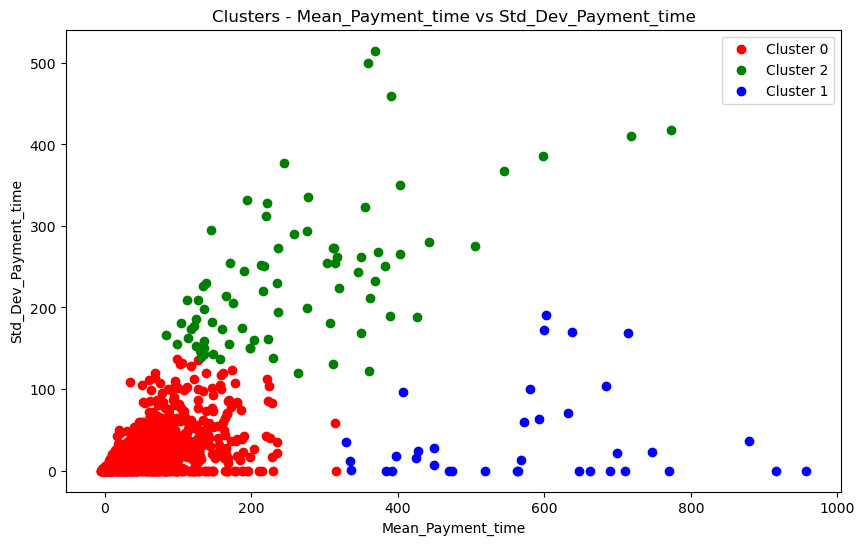
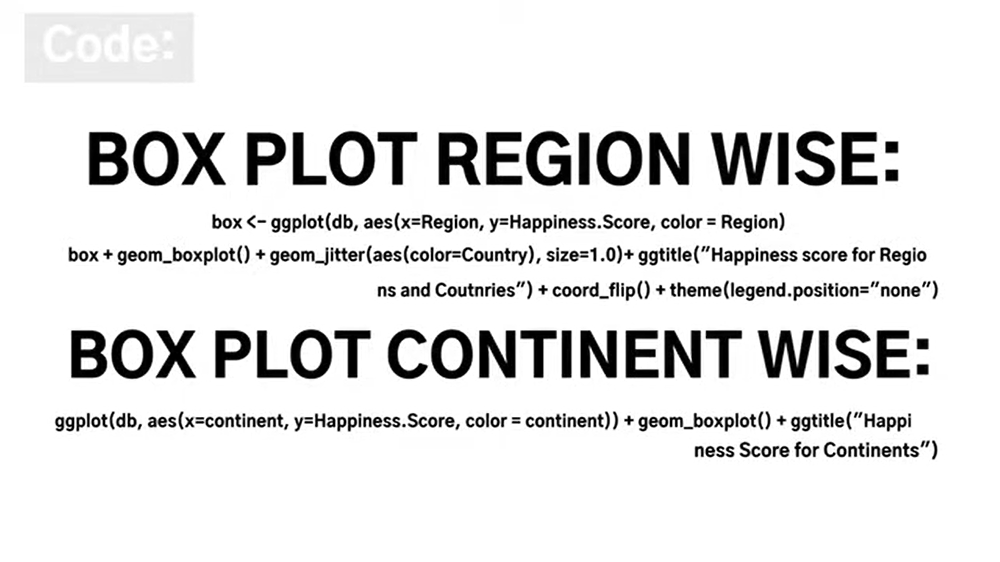

Exploratory Data Analysis for Bank Risk Assessment
Exploratory Data Analysis for banking data to understand the driving factors or driver variables behind loan defaults.
Python, Pandas, Data Visualization
View Project

Forecasting Late Payments and Customer Segmentation
Exploratory Data Analysis to mitigate late payment issues and model building with the 3 main customer segments.
Clustering, Forecasting
View Project
Movie Recommendation using SQL
Data analysis of IMDB data for Movie Recommendation using SQL.
SQL, Database Analysis
View Project
Regression Model Building for Scoring Leads
Improving conversion from 30% to 92% using ML Techniques. Developed a logistic regression model for lead scoring.
Machine Learning, Regression
View Project

World Happiness Data Analysis using R
A Project on World Happiness Report and Introduction to R Programming.
R Programming, Data Analysis
View Project
100 Projects Bootcamp on Python
Projects describing various tools and techniques, covering different types of programs developed.
Python, Programming
View Project